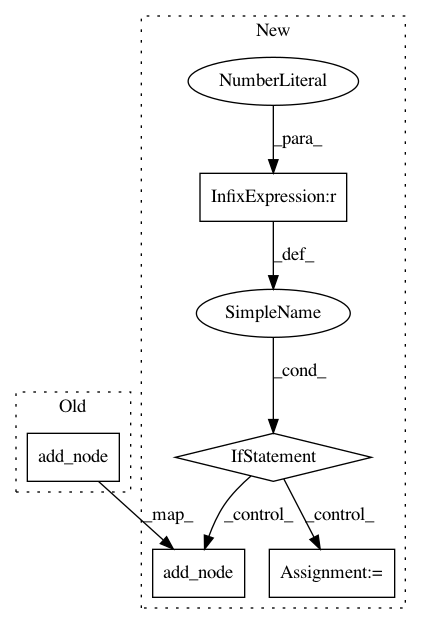

fcde897b8e2f7e9380035e4fa8c53f9d1382d0ca,onnxutils/onnxconverter_common/onnx_ops.py,,apply_upsample,#Any#Any#Any#Any#Any#Any#Any#,532
Before Change
inputs = [input_name[0], scales_tensor_name]
op_version = 9
container.add_node("Upsample", inputs, output_name, op_version=op_version, **attrs)
After Change
:param mode: nearest or linear
:param scales: an integer list of scaling-up rate of all input dimensions
"""
if container.target_opset < 10:
name = _create_name_or_use_existing_one(scope, "Upsample", operator_name)
inputs = input_name
attrs = {"name": name}
if container.target_opset < 7:
if len(scales) != 4:
raise ValueError("Need to specify a 4-element list the the scales of N-, C-, H-, and W-axes")
attrs["height_scale"] = float(scales[2])
attrs["width_scale"] = float(scales[3])
attrs["mode"] = mode.upper()
op_version = 1
else:
attrs["mode"] = mode.lower()
if container.target_opset < 9:
attrs["scales"] = list(map(float, scales))
op_version = 7
else:
// scales moved from attribute to input in opset 9
scales_tensor_name = scope.get_unique_variable_name(name + "_scales")
container.add_initializer(scales_tensor_name, onnx_proto.TensorProto.FLOAT, [len(scales)], scales)
inputs = [input_name[0], scales_tensor_name]
op_version = 9
container.add_node("Upsample", inputs, output_name, op_version=op_version, **attrs)
else:
// TODO, we need verify this after onnx opset 10 release
name = _create_name_or_use_existing_one(scope, "Resize", operator_name)
attrs = {"name": name}
attrs["mode"] = mode.lower()
scales_tensor_name = scope.get_unique_variable_name(name + "_scales")
container.add_initializer(scales_tensor_name, onnx_proto.TensorProto.FLOAT, [len(scales)], scales)
inputs = [input_name[0], scales_tensor_name]
op_version = 10
container.add_node("Resize", inputs, output_name, op_version=op_version, **attrs)
In pattern: SUPERPATTERN
Frequency: 3
Non-data size: 5
Instances
Project Name: onnx/onnxmltools
Commit Name: fcde897b8e2f7e9380035e4fa8c53f9d1382d0ca
Time: 2019-04-12
Author: vinitras@gmail.com
File Name: onnxutils/onnxconverter_common/onnx_ops.py
Class Name:
Method Name: apply_upsample
Project Name: deepchem/deepchem
Commit Name: 08c9040e236373f305773e0fb46990d0d9757572
Time: 2016-02-11
Author: evan.n.feinberg@gmail.com
File Name: deepchem/models/deep.py
Class Name: MultiTaskDNN
Method Name: __init__
Project Name: deepchem/deepchem
Commit Name: fc7e600185ccd1c451dd5db987737f4659889f7b
Time: 2016-02-05
Author: bharath.ramsundar@gmail.com
File Name: deepchem/models/deep.py
Class Name: MultiTaskDNN
Method Name: __init__